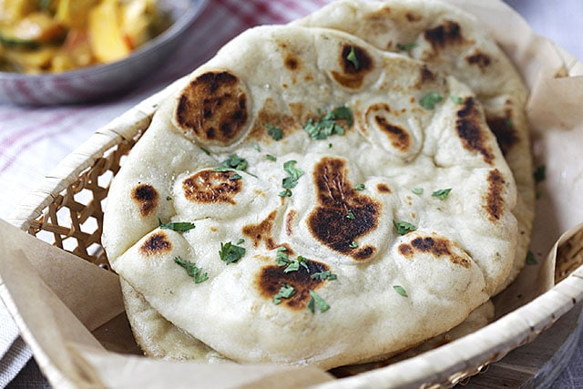

Naan Bread

Easy Homemade Naan Bread
Soft and pillowy naan is easy to make at home, better than anything store bought.
Ingredients
- 2 cups All-Purpose Flour
- 1 tbsp Sugar
- 1 tsp Instant Dry Yeast
- 1 tsp Salt
- 3 tbsp Plain Yogurt
- 2 tbsp Extra Virgin Olive Oil
- 3/4 cup Warm Water
- 2 tbsp Melted Salted Butter
- 1 tbsp Chopped Fresh Parsley
Instructions
-
In a large bowl, whisk together the flour, sugar, yeast, and salt. Set aside.
-
In a medium bowl, whisk together, the yogurt, olive oil, and 3/4 cup warm water
(about 100°F). Add the yogurt mixture to the dry ingredients and mix with a fork.
When the dough is about to come together, dust your hands with flour and knead gently
into a soft, slightly sticky dough (sprinkle more flour, little by little, if the dough
is too wet to work with). As soon as it comes together, stop kneading.
-
Lightly oil or spray a clean bowl with nonstick cooking spray (the bowl should be large
enough to allow the dough to double in size). Transfer the dough to the prepared bowl and
cover with plastic wrap or a damp kitchen towel. Let sit in a warm place for 1 to 1.5 hours,
or until about doubled in size (hint: the warmer the spot, the faster the dough will rise).
-
Fill a small bowl with about 1/2 cup flour. Dust a work surface with some of the flour and
dump the dough on top. Sprinkle some of the flour on top of the dough and on your hands.
Shape the dough into a long rectangle and cut into 6 equal portions, dusting with more flour
as necessary so the dough doesn't stick. Roll each portion of dough in the bowl of flour to
keep them from sticking.
-
Warm a large cast-iron or heavy nonstick pan over medium-high heat until very hot. Using a
rolling pin, roll one of the dough balls into an oval shape about 1/8-inch thick (it should
be about 9 x 4 inches). Pick up the dough and flip-flop it back and forth between your hands
to release any excess flour; then gently lay the dough in the dry skillet and cook until the
top is bursting with air bubbles and the bottom is golden and blackened in spots, a few
minutes. Flip the naan and cook about 1-2 minutes more until the bottom is lightly browned
and blistered in spots. Remove the naan from the skillet and brush with melted butter.
Place the naan in a tea towel-lined dish to keep warm. Repeat with the remaining naans,
adjusting the heat lower if necessary as you go (I usually find it necessary to lower the
heat to medium after the first naan). Sprinkle with parsley, if using, and serve warm.